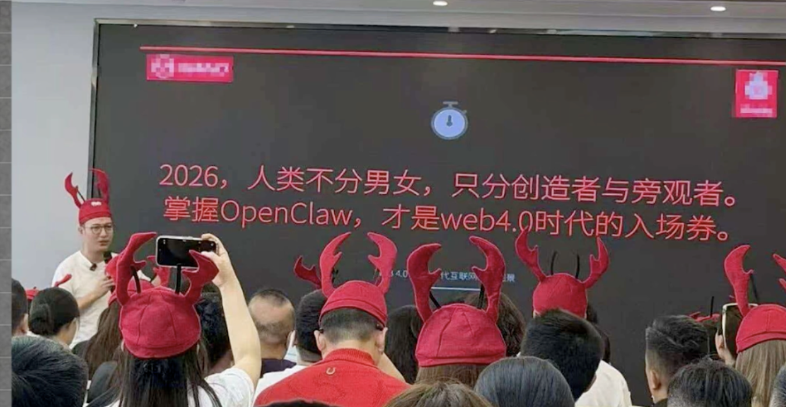
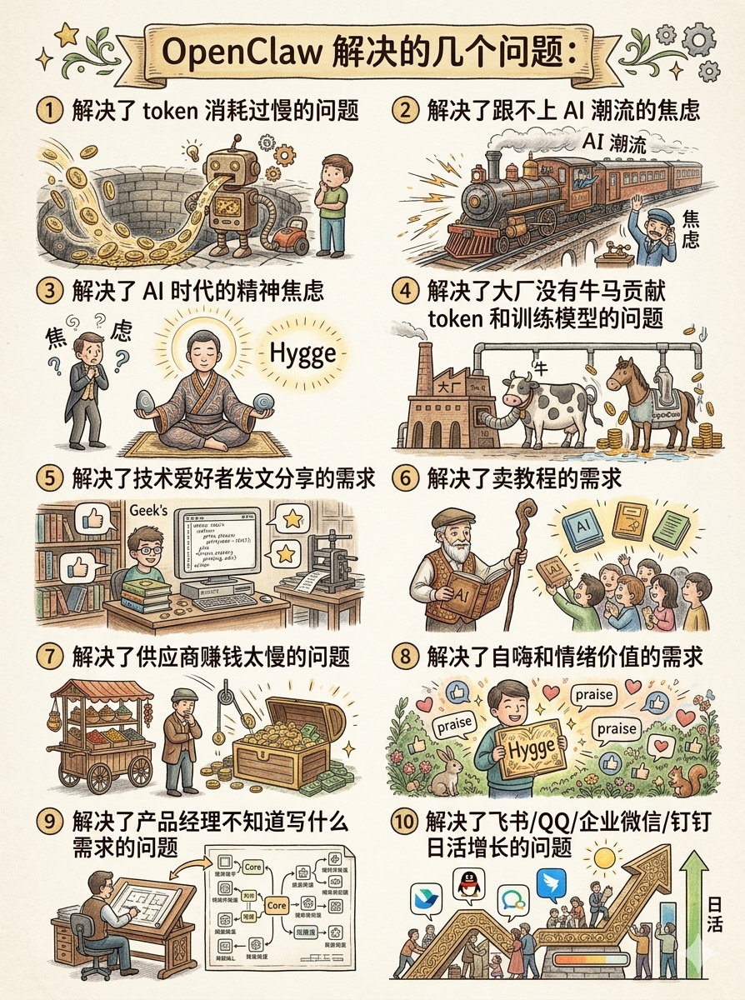
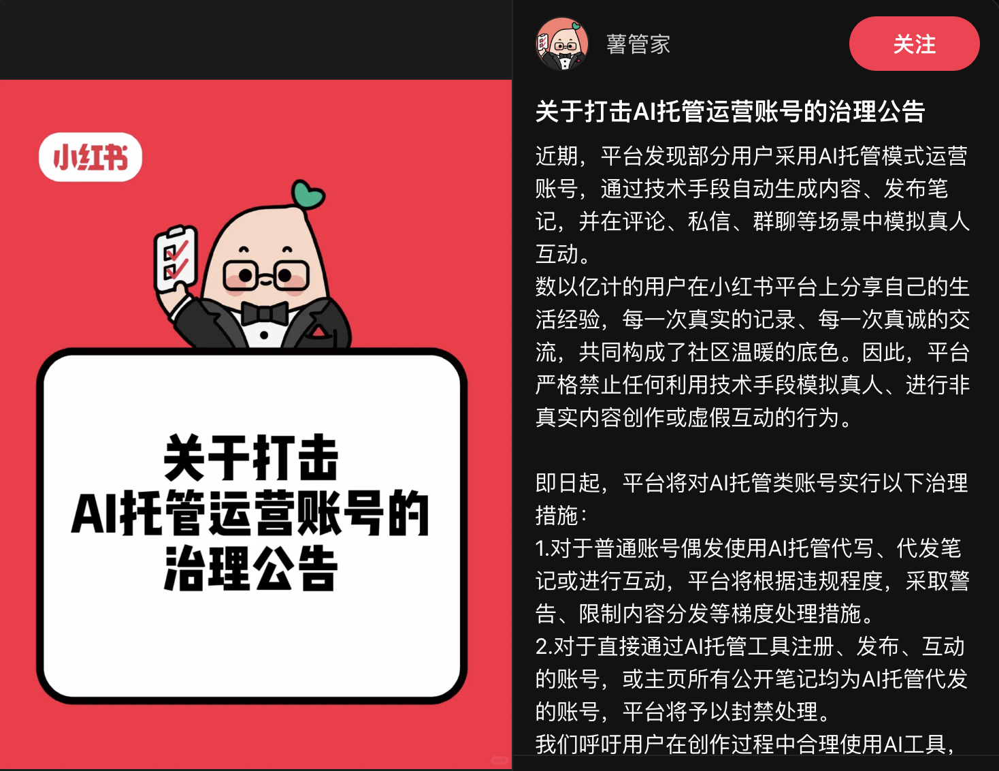

Agent 来了，你的数据准备好了吗？
从一只龙虾、一顶帽子、一场骗局说起
一、先说说这只龙虾是怎么火起来的
2025 年 11 月，奥地利独立开发者 Peter Steinberger 用了大概一个下午，把 Claude 的 API 接上了 WhatsApp，做了一个能通过聊天软件直接操控电脑执行任务的 AI 助手。
他本来觉得这个想法太过简单，大公司肯定早就做了。
结果没有。
他把项目开源，取名 OpenClaw，挂到 GitHub 上。
接下来发生的事，让整个硅谷都没想到——这个项目的 GitHub 星标数，在短短几个月内突破 25 万，超过了 React，超过了 Linux，成为 GitHub 有史以来增长最快的开源项目之一。与此同时，OpenAI 火速伸出橄榄枝，将 Steinberger 纳入麾下，委以重任开发下一代 Agent 产品。
OpenClaw 能做什么？
简单说：它不是一个会聊天的 AI，它是一个会干活的 AI。
- 帮你读邮件、分类、起草回复
- 自动填写表单、预定机票、追踪价格变动
- 监控 GitHub 仓库动态并自动整理摘要
- 管理日历、汇总会议记录、生成周报
- 甚至可以接入本地文件系统，替你整理文档
用一句话概括：以前你要雇三个助理才能搞定的杂事，现在一个跑在你电脑上的 Agent 就能做。这就是为什么它被称为"一人公司"的基础设施。
中国网友给它起了一个非常中国特色的名字——龙虾。养一只龙虾，在你的电脑里帮你干活。
二、当龙虾遇上中国互联网
这波热潮传到国内之后，进入了一个神奇的加速器。
首先是政务层面的背书。
微博热搜第一："公务员养上政务龙虾了"，讨论量超过 106 万。
官方渠道的认可，是任何一波技术热的催化剂。政府用了，媒体跟进，普通人的"好像真的很重要"感急剧升温。紧随其后，深圳龙岗区和无锡新吴区相继发布草案，宣布推动围绕 OpenClaw 的产业生态建设，具体措施包括：对有影响力的 OpenClaw 应用给予最高 1000 万元补贴，为"一人公司"提供免费算力资源、住宿补贴和优惠办公空间。无锡则对将 OpenClaw 应用于制造业、具身智能机器人的项目给予最高 500 万元资助。
其次是飞书的精准卡位。
在这波玩虾热里，一个有趣的现象是：飞书几乎一夜之间成了中文养虾圈最主流的交互平台，替代了 Discord 这类国外工具。飞书迅速推出了"5 分钟极速部署 OpenClaw"的 Ark Claw 方案，专门举办了玩虾分享会，表面上是技术普及，本质是商业卡位。
谁能成为 Agent 的"对话入口"，谁就掌握了下一代人机交互最核心的流量节点。飞书押注的，是企业级 Agent 交互入口这个赛道。这步棋走得不露声色，但目的相当清晰——和微信当年切入移动互联网的逻辑如出一辙。
这波热潮，到底是在帮用户解决问题，还是在帮平台和卖课者解决增长问题？
三、在聊"数据"之前，我们先聊聊那顶帽子
说到这里，我需要停下来，说一些可能让一部分读者不舒服的话。
你可能在朋友圈、在抖音、在某个 B 站视频的评论区见过这样一张照片：

台下的人们举起手机拍照，神情肃穆，仿佛正在见证某种历史性时刻。
我第一次看到这张图的时候，脑子里立刻浮现出了另一张图——
那个时代，"特异功能"是入场券。那个时代，"接收能量"是仪式感。那个时代，成千上万的普通人，用尽全力，追赶他们以为的未来。
两张图并排放在一起，像极了一面镜子。
帽子换了颜色，换了材质，从铝锅盖变成了毛绒龙虾角。但那个动作是一样的——把自己交出去，相信有人能带领你进入新世界。
四、一张海报和一条评论，说清楚了两个真相
这两个月，我看到两张截图，觉得比任何分析文章都有力量。
第一张，是差评君做的讽刺海报：

从 OpenClaw 入门课，到帮你一键部署的外包服务，再到"上门卸载"——每一个焦虑节点，都有人在等着收钱。
培训班卖焦虑，中间商卖便利，连退出成本都被货币化了。这条产业链，无比熟悉，无比高效，无比中国。
第二张，是一篇公众号下一条高赞评论：
这条评论说出了一个被热潮遮蔽的事实：OpenClaw 需要获取你电脑的高级权限，这不是危言耸听，连创始人 Steinberger 本人都明确发出过安全警告。
一个连手机应用商店都找不到的工具，正在被培训班包装成"人人都要学会的生存技能"——而那些真正应该被告知风险的人，正是那些最容易被焦虑裹挟、最没有技术判断力的普通用户。
更耐人寻味的是小红书的反应。就在 OpenClaw 热潮正盛的时候，小红书发出了一则官方公告：

这很有意思。一方面，政府在鼓励 OpenClaw 生态，另一方面，平台已经开始为 Agent 刷量、AI 托管内容立规矩。
技术的扩散速度，已经跑在了治理框架的前面。
五、历史总在重演，只是换了一身皮
中国的技术热，有一个固定的叙事结构：
第一章：先行者真正在探索。
这个阶段的人是少数，他们在认真研究，认真踩坑，认真从技术里榨取真实价值。
第二章：媒体介入，概念爆炸。
"革命性技术"、"颠覆一切"、"不学就淘汰"——这些词开始刷屏。这个阶段，技术本身退居其次，叙事才是主角。
第三章：焦虑贩卖机入场，收割开始。
培训班、速成课、一键部署服务、"帮你养龙虾"的外包团队……一个完整的焦虑经济体系迅速成形。
第四章：大多数人发现自己没赚到钱，热度消退，下一个概念登场。
这个结构，我们已经见过很多次了——元宇宙、NFT、Web3、区块链……每一次，都有人在第一章就入场，笑到最后。每一次，都有更多人在第三章入场，成为了燃料。
OpenClaw 和 Agent 不一样，底层技术是真实的，长期价值是真实的。但这正是它比元宇宙更危险的地方：因为技术是真的，所以焦虑贩卖者有了更充分的理由，普通人更难分辨哪些是真正的价值，哪些是镀了金的镰刀。
六、那么，真正值得认真对待的是什么？
好，批判说完了，该说建设性的内容了。
抛开那顶龙虾帽，抛开焦虑经济，OpenClaw 和 Agent 时代带来的真实变化，值得每一个产品人、创业者、普通职场人认真思考。
这个变化的核心，不是"你要学会用 OpenClaw"，而是：
Agent 的价值，取决于你喂给它什么。
1. 公司视角：数据资产的再认识
很多公司辛辛苦苦写了 SOP，没人看。很多公司花大价钱做了知识库，没人用。很多公司最有价值的经验，装在几个老员工的脑子里，等他们离职就消失了。
这不是管理问题，是数据组织形式的问题。
传统的文档是静态的——它等着人去翻，而人总是嫌麻烦，不去翻。但 Agent 不同。Agent 可以主动检索、主动匹配、主动把相关知识推送给需要的人。它 24 小时在线，不抱怨，不偷懒，不忘事。
问题是：如果你的 SOP 写得不清楚，你的流程文档东一块西一块，你的历史决策从来没有留下记录——那 Agent 读到的，只是一堆噪音。
"数据喂得好，Agent 才会好"，这是未来三年企业 AI 落地的第一定律。
真正聪明的管理者，现在要做的不是去买 Agent 工具，而是要开始系统性整理数据资产：流程怎么记录、决策怎么留痕、客户反馈怎么沉淀、历史经验怎么结构化。
2. 个人视角：你的数字分身需要原材料
你有没有想过，未来几年，每个人都会有一个属于自己的 Agent？
它可以是你的"数字助理"，帮你处理邮件、安排日程、整理信息。
它可以是你的"知识管家"，在你需要的时候，瞬间调出你过去所有的相关经验。
它甚至可以是你的"创意伙伴"，基于你过去的所有作品，给你提供创作灵感。
但问题是：这个数字分身，要靠什么来理解你、替代你？
答案只有一个：数据。
你的工作日记、你的决策记录、你的项目复盘、你的经验总结——这些数据，是塑造你的数字分身的原材料。
如果你今天什么都不记录，几年后，当别人已经开始用 Agent 复制自己的经验、放大自己的能力时，你只有一具空壳——因为你的数字分身没有东西可以学。
3. 数据的三个层次
什么样的数据，对 Agent 有价值？我把它分成三个层次：
- 第一层：显性数据。你写过的文档、做的 PPT、发的邮件、填过的表单。这是最容易采集的，但也是价值最低的——因为它是片段化的，缺少上下文。
- 第二层：隐性数据。你的工作习惯、决策逻辑、偏好设定。这些数据没有直接写在任何文档里，但藏在你的日常行为中。比如：你处理邮件的顺序、你评估项目的标准、你做选择时的权衡因素。
- 第三层：元数据。你做一件事时的前因后果、你遇到问题时的思考路径、你解决问题的方法论。这是最难的，但也是价值最高的——因为它是结构化的、可传承的。
大多数人的问题在于：他们的数据停留在第一层，甚至第一层都没有完整保留。
而在 Agent 时代，真正有竞争力的数据，是第二层和第三层。
4. 从今天开始可以做的事
不需要等 Agent 工具成熟，不需要购买任何服务，不需要戴任何帽子。
从今天开始，你可以做三件事：
- 养成记录习惯。每天写 5 分钟的工作日记，记下你今天做了什么、遇到了什么问题、是怎么解决的。
- 结构化经验。做项目复盘时，不只是记录结果，要记录过程：当时面临的选择、权衡的依据、最终决策的原因。
- 建立知识体系。把你学到的知识、做过的项目、总结的方法，用系统的方式组织起来，而不是散落在各个地方。
这些数据，不会立刻给你带来什么收益。但三年后，当别人开始用 Agent 复制自己的能力时，你会发现：
你积累的每一个数据点，都是你数字分身的一块砖。别人在训练 Agent，而你在训练自己。
5. 企业的未来：数据资产化
对企业来说，这个变化更加深远。
未来三到五年，企业的核心竞争力，可能不再是产品、技术或品牌，而是数据资产。
一个公司如果能把自己的 SOP、决策逻辑、客户反馈、历史经验，全部结构化、数字化，然后用 Agent 驱动——这个公司就会拥有前所未有的效率和创新能力。
新员工入职，不是跟着老员工学几个月，而是让 Agent 根据公司的数据资产，快速生成培训材料和实践指南。
遇到问题，不是问经验丰富的前辈，而是问 Agent，让它从历史数据中找到最类似的案例和解决方案。
甚至可以基于公司的数据资产，训练出专属的 Agent，让它理解公司的文化、流程和决策逻辑。
这对公司来说，意味着核心经验不再绑定在人身上，而是沉淀在数据资产里，可以被复制、传承、优化。
七、写在最后：两件事，一个提醒
最后，把结论收拢到两件具体的事情上。
第一件事：冷静对待 Agent 工具本身。
OpenClaw 是好工具，但它需要你的电脑高级权限，它的 Token 成本目前对普通用户仍然不低，真正跑出稳定正收益的案例还是少数。那些告诉你"现在不学就晚了"的人，要么是真的走在前面、好意提醒，要么是在卖焦虑、卖课程。
不要为了"不被淘汰"的恐惧而花钱，要为了真实的效率提升而尝试。
第二件事：从今天开始养成数据留痕的习惯。
这件事不需要等 Agent 工具成熟，不需要购买任何服务，不需要戴任何帽子。
你需要做的，只是：
- 写工作日记，哪怕每天 5 分钟
- 记下重要决策的前因后果
- 做项目复盘，不只是结果，要记过程
- 把你的经验、方法、判断依据，用文字留下来
这些数据，是你在 Agent 时代最重要的资产。不是你手里的工具，不是你会用的平台，而是你积累的、有温度的、属于你自己的认知数据。
回到最开始那两张照片——满屋子戴着龙虾帽的人，和几十年前戴着锅盖帽的人。
他们最大的区别，不是那顶帽子。
而是：戴锅盖帽的人，什么都没有留下。
如果你今天戴上了龙虾帽，然后也什么都没留下——那这顶帽子，只是换了个颜色。
Agent 来了。
它不在乎你学没学过 Python，不在乎你用的是飞书还是 Discord，不在乎你有没有买那个 299 元的部署服务。
它只在乎：你有没有数据。
如果这篇文章对你有帮助
欢迎转发给还在纠结要不要报班的朋友。
你目前用什么工具做个人知识管理和工作记录？欢迎在评论区告诉我。